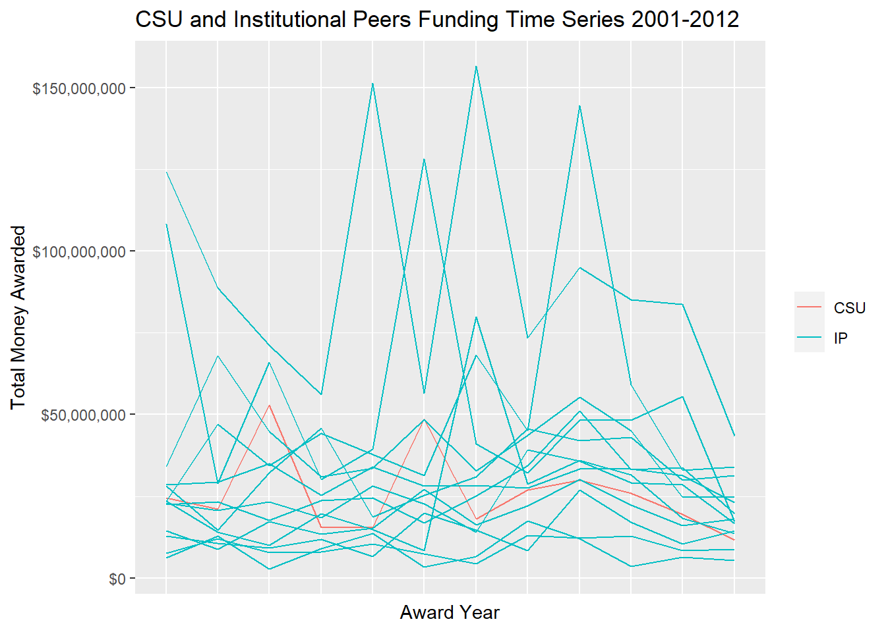

Using a practice dataset featuring several universities in the US and award funding, I created two time series plots. Colorado State University (CSU)‘s National Science Foundation (NSF) award funding is compared to its institutional peers’ NSF award funding between 2001 and 2012. Institutional peers include University of California - Davis, University of Illinois - Urbana Champaign, University of Tennessee, Virginia Polytechnic Institute and State University, Washington State University, Iowa State University, Kansas State University, Michigan State University, North Carolina State University Oklahoma State University, Oregon State University, Purdue University, and Texas A & M University. The data were filtered and subset to clean them up for the visualizations.
Time Series in One Plot
This plot shows CSU’s award funding (in red) compared to its institutional peers (in blue) between 2001 and 2012.
plot1 <-ggplot(highlight_combo, mapping =aes(x =as.factor(AwardYear), y = AWARD_SUM, color = highlight, group = Organization)) +geom_line() +labs(title ="CSU and Institutional Peers Funding Time Series 2001-2012", x ="Award Year", y ="Total Money Awarded") +scale_y_continuous(labels = scales::label_dollar()) +theme(legend.title =element_blank(),axis.ticks.x =element_blank(),axis.text.x =element_blank())print(plot1)

Time Series in Small Multiples
This plot shows all university NSF award funding between 2001 and 2012. Each small graph is a time series for a specific university. The acronyms correspond with the universities listed above. This plot shows the same information as the previous plot but in a different format.
plot2 <- combo %>%ggplot(mapping =aes(x =as.factor(AwardYear), y = AWARD_SUM, color = Organization, group = Organization)) +geom_line() +labs(title ="Award Funding by University Time Series 2001-2012", x ="Award Year", y ="Total Money Awarded") +scale_y_continuous(labels = scales::label_dollar()) +facet_wrap(~Acronym) +theme(legend.position ="none", axis.ticks.x =element_blank(),axis.text.x =element_blank())print(plot2)